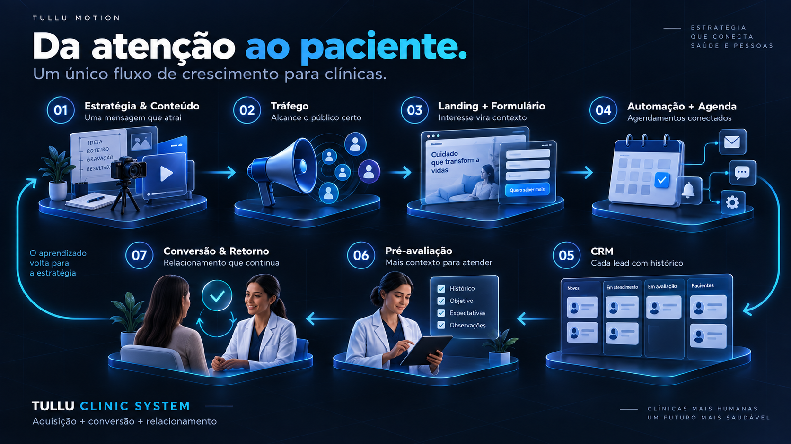

Marketing fragmentado
Conteúdo, tráfego e atendimento não conversam.
Tullu Clinic System
Estratégia, conteúdo, tráfego, landing page, captação, agendamento e CRM conectados em uma única jornada.
Da atenção ao agendamento. Do lead ao paciente.
Sua estrutura de crescimento
Uma mensagem que encontra o público certo.
Interesse e origem conectados desde o início.
Menos trocas de mensagens para confirmar.
A equipe começa a conversa com contexto.
Aprendizado para conteúdo, campanhas e retorno.
Construído para quem cuida.
01 / O ponto de partida
Conteúdo, tráfego e atendimento não conversam.
A pessoa chega e a equipe precisa descobrir tudo novamente.
Trocas de mensagens e oportunidades que esfriam.
A clínica não usa o aprendizado das conversões para melhorar campanhas e conteúdo.
02 / A arquitetura do crescimento
Transformamos a presença digital da sua clínica em um sistema de crescimento.

Oferta, pauta, roteiro, gravação e criativos.
Campanhas, públicos, testes e remarketing.
Captura estruturada de interesse e contexto.
Confirmação e agendamento sem atrito.
Origem, interesse, status e histórico.
O profissional recebe briefing antes da conversa.
Follow-up, fechamento, retorno e próximo ciclo.
Cuidamos do sistema que traz e converte demanda para a clínica. A gestão de prontuário, financeiro e ERP continua com as ferramentas da sua operação.
03 / O que a Tullu instala
Mensagem, público, diferenciais e oferta.
Estratégia, roteiro, gravação, edição e calendário.
Meta Ads, públicos, testes e remarketing.
Página com CTA e formulário para captar interesse com contexto.
Agenda, confirmação, contexto, histórico e follow-up.
Script, acompanhamento, retorno, indicação e novos ciclos.
IA faz parte dessa estrutura: apoia a automação e a organização das informações ao longo da jornada.
04 / Visão de produto
Uma interface para conectar leads, agenda, conteúdo e campanhas. Esta é uma visão em evolução, ainda não um software disponível.
| Interesse | Origem | Etapa |
|---|---|---|
| Novo interesse | Formulário | Pré-avaliação |
| Lead qualificado | Agendado | |
| Follow-up | Campanha | Em contato |
| Retorno | Base própria | Reativação |
05 / Da construção à evolução
Entendemos a clínica, oferta, capacidade, canais e gargalos.
Montamos conteúdo, páginas, formulário, automações, agenda e CRM.
Ativamos campanhas e canais.
Os dados de leads, agendamentos e conversão voltam para a estratégia.
Tullu Academy
Um pilar permanente da Tullu para democratizar conhecimento e aproximar pequenos empreendedores brasileiros da tecnologia.
Conteúdo gratuito e permanente, para aprender e aplicar no dia a dia.
06 / Vamos conectar as etapas
Conte um pouco sobre sua clínica e o que precisa funcionar melhor agora.
Vamos entender seu momento e conversar sobre uma estrutura de captação, agendamento e relacionamento que faça sentido para a sua operação.
Seu próximo ciclo começa aqui
Sua clínica cuida do atendimento.
A Tullu constrói o sistema que faz mais oportunidades chegarem organizadas até ele.